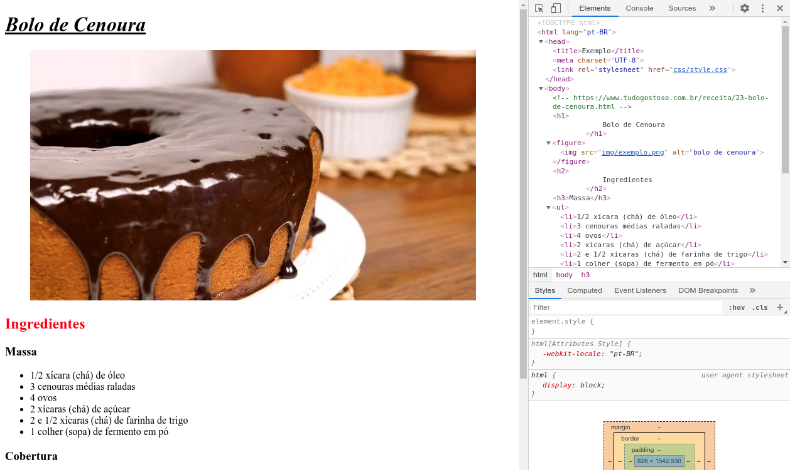
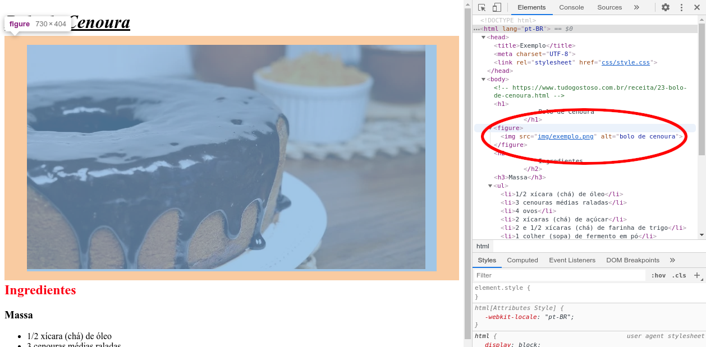
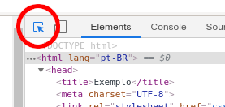
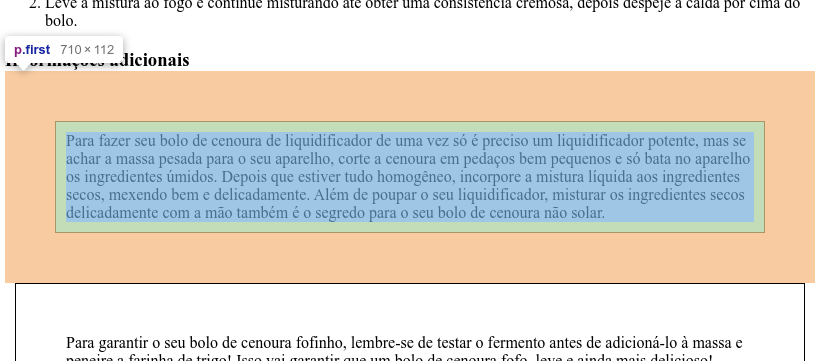
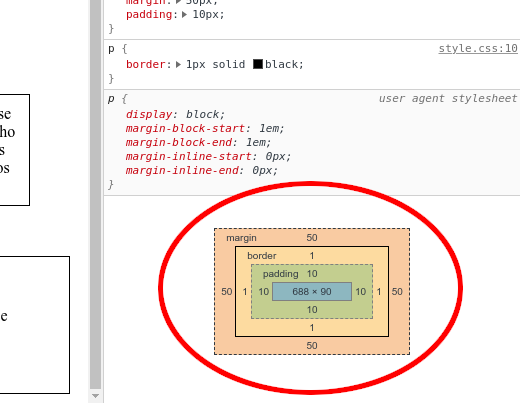
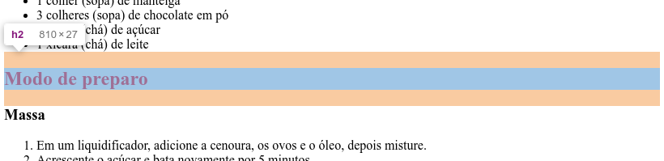
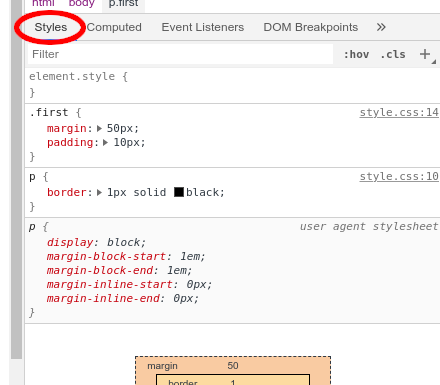

CSS 1: Inspeção
Já falamos um pouco sobre as Ferramentas de Desenvolvedor do Chrome, mas agora precisamos nos aprofundar mais, pois elas são as melhores amigas do desenvolvedor front-end. Em particular, nos momentos de escrever código CSS.
Abra o mesmo exemplo no Chrome e pressione F12 ou Ctrl+Shift+j (Cmd+Option+j no macOS) para abrir essas ferramentas.

Já falamos da aba Elements, mas não da sua funcionalidade mais útil: quando você passa o mouse sobre um elemento do código HTML, esse elemento é destacado na visualização.

Inclusive, se você habilitar o botão no canto superior esquerdo, pode fazer o contrário: passar o mouse sobre um elemento da visualização para destacar esse elemento no código HTML.

E fica melhor ainda: o destaque mostra, em cores diferentes, o que é margem, o que é padding e o que é conteúdo no espaço ocupado pelo elemento.

Inclusive, se você clicar no elemento para selecioná-lo, pode ver uma legenda no canto inferior direito que indica as dimensões da margem, da borda, do padding e do conteúdo.

Existem dois motivos principais para apreciar essas ferramentas: o primeiro é o fato de que margens e paddings são invisíveis, portanto não é possível descobrir "a olho nu" o que está causando um espaçamento.
O segundo, mais sutil, é que as aparências enganam em relação ao tamanho de um elemento. O conteúdo de um elemento, e portanto o elemento em si, pode ser muito maior que sua parte visível sugere. Os exemplos mais claros disso são os títulos, que ocupam toda a largura da página mesmo quando o texto é curto.

Para encerrar, cabe mencionar a aba Styles, que mostra as propriedades CSS do elemento que foi selecionado. Essa aba é útil para descobrir quais são os valores de todas as propriedades, inclusive daquelas que você não definiu no seu arquivo CSS.

Também é útil para investigar situações nas quais a propriedade que você definiu no seu arquivo CSS não estão sendo aplicadas... mas isso é algo que deixaremos para uma próxima conversa.